Nenhum reutiliza o shell, o papel creme, o verde FleetOS, os desenhos técnicos ou os mapas desenrolados. Cada um parte de uma ferramenta que um funcionário de escritório já conhece — email, Trello, Excel, calendário, Project, chat — e mostra o mesmo dia de operação.
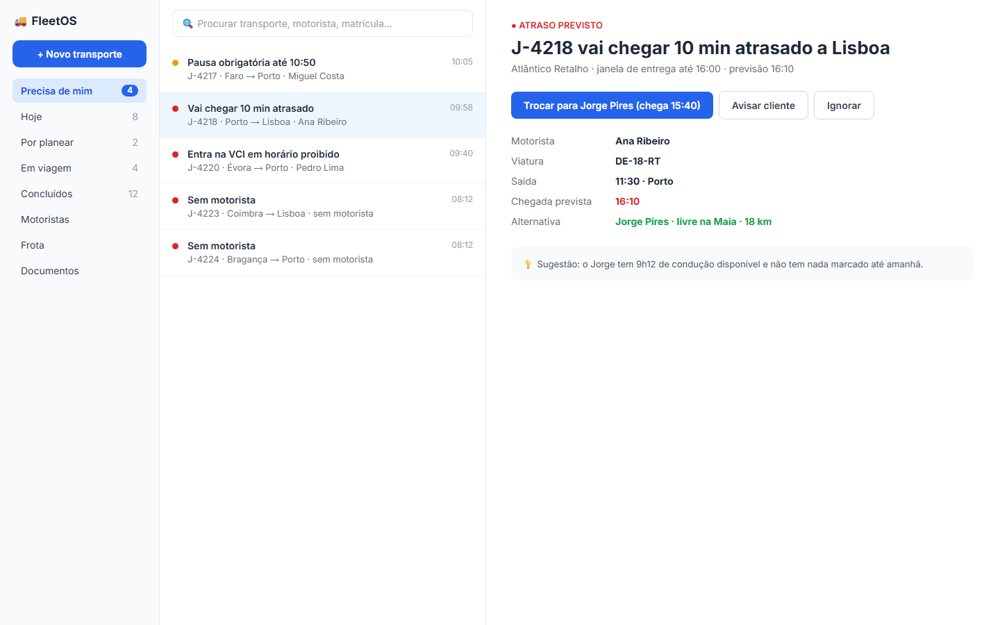
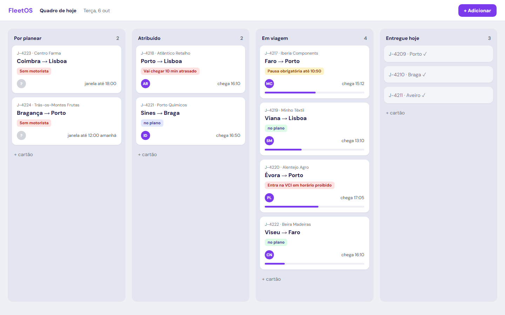
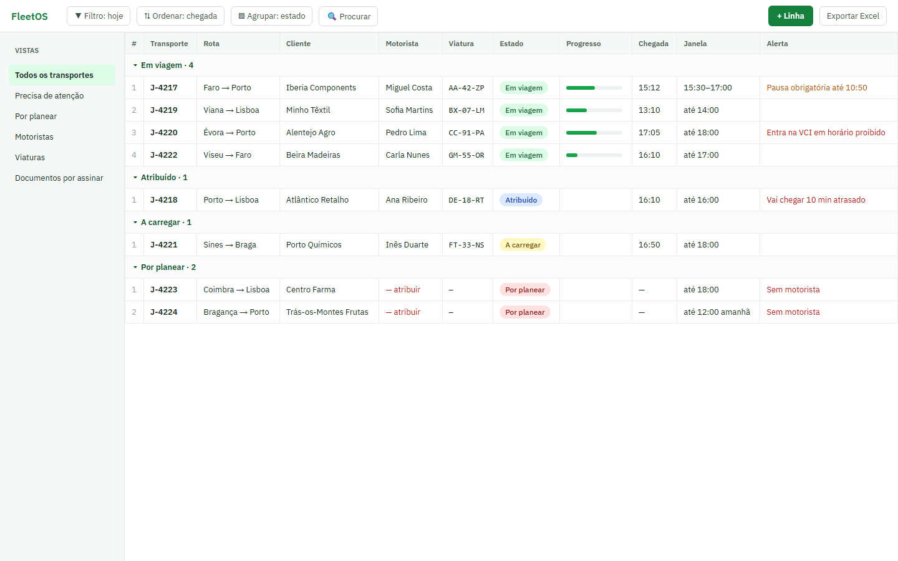
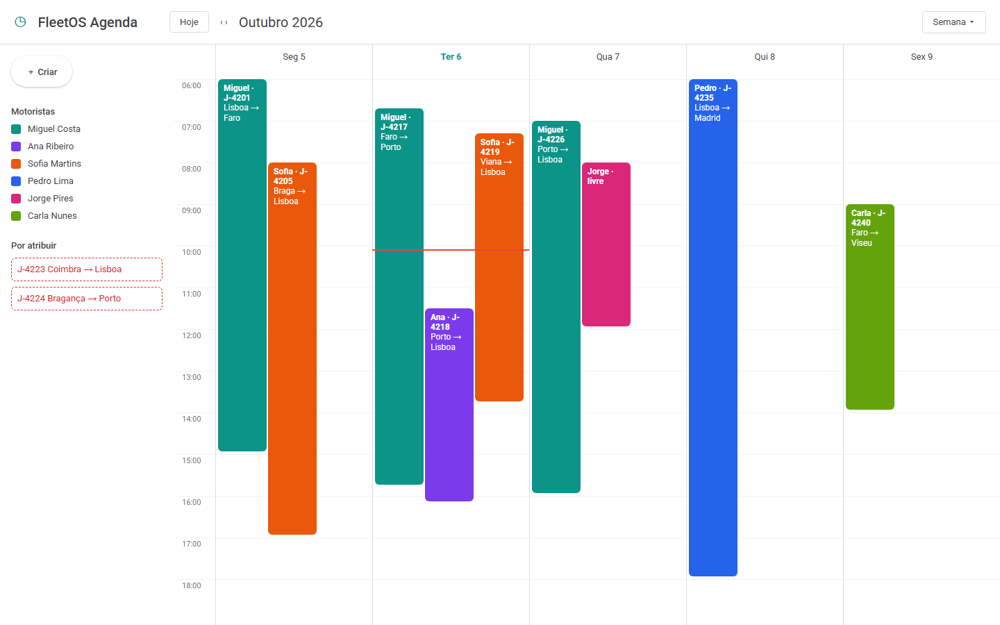
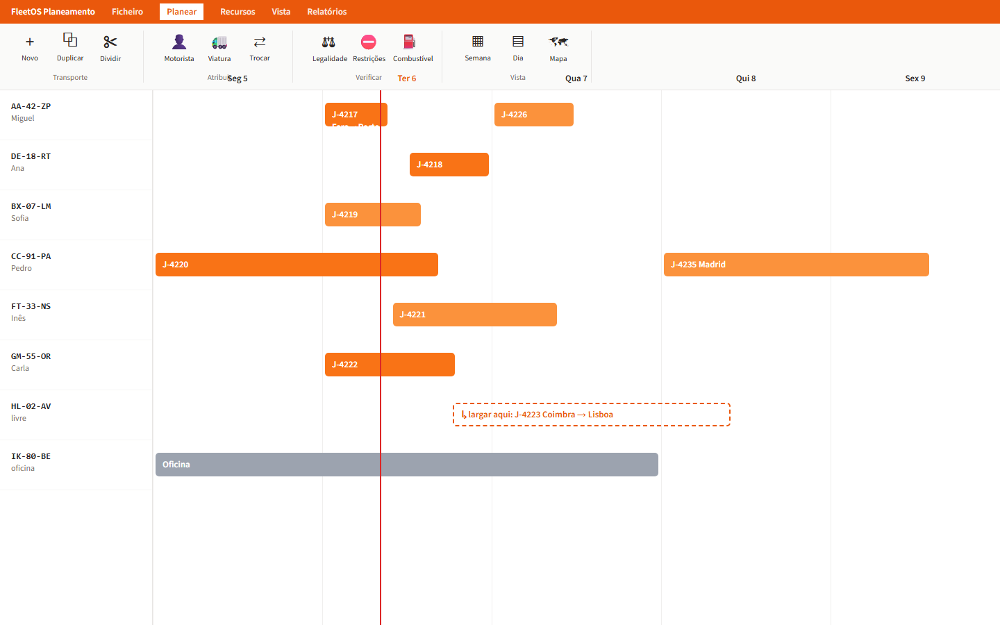
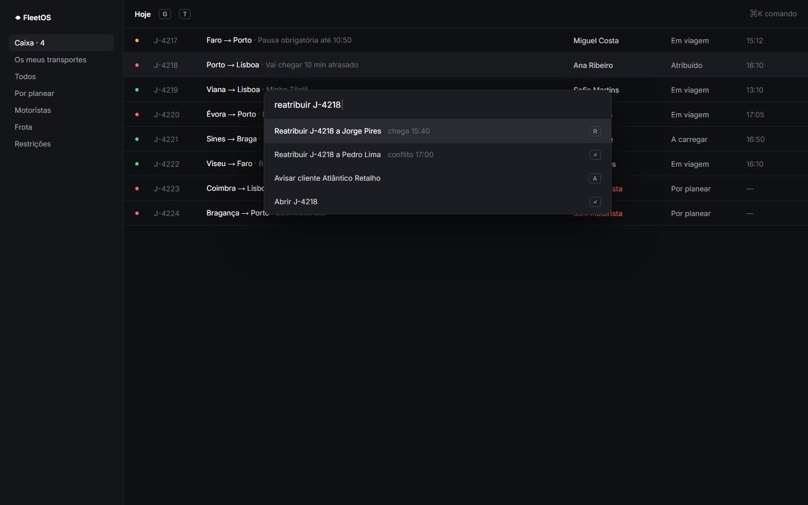
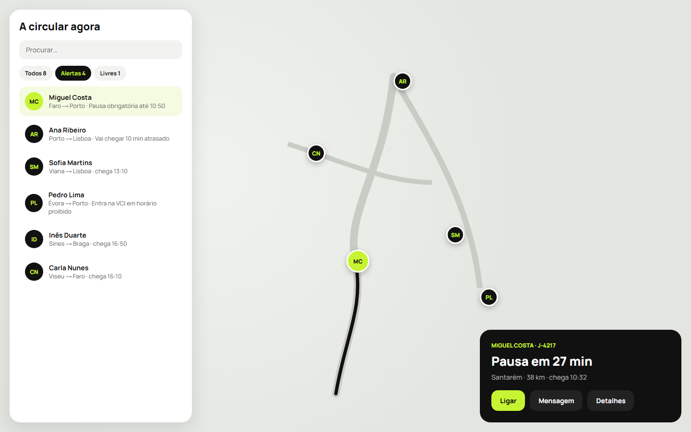
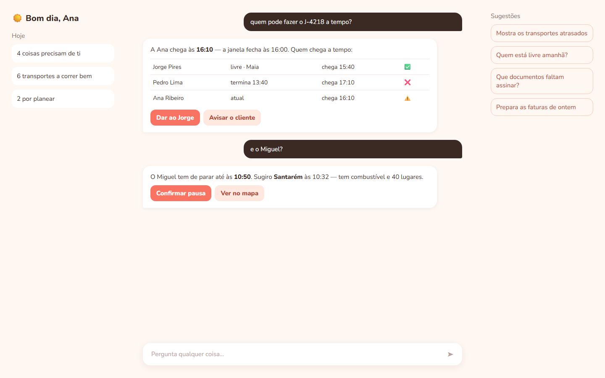
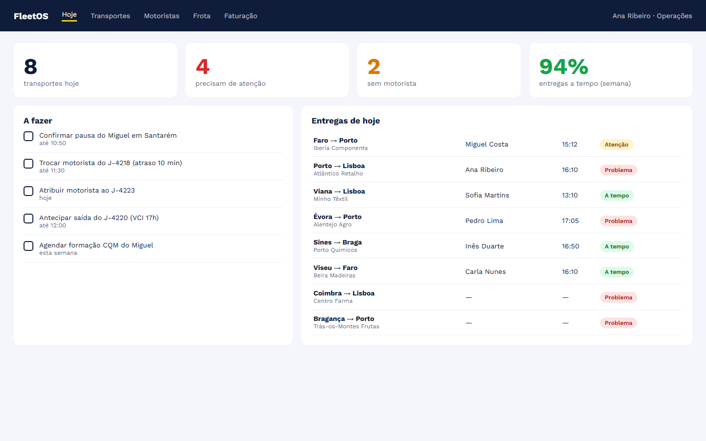
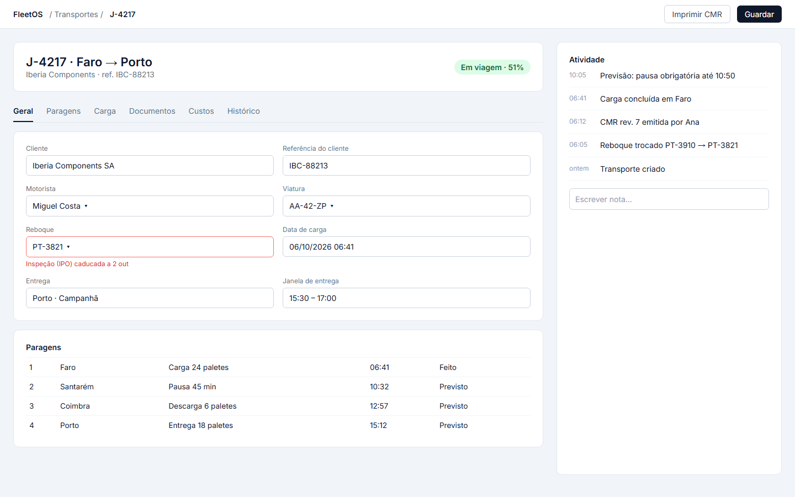
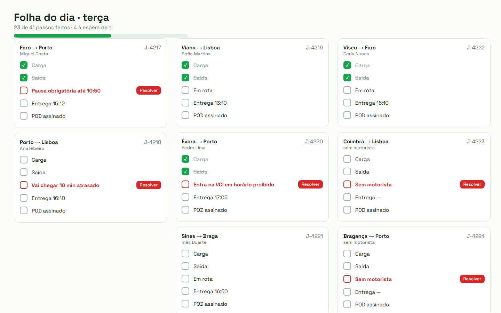
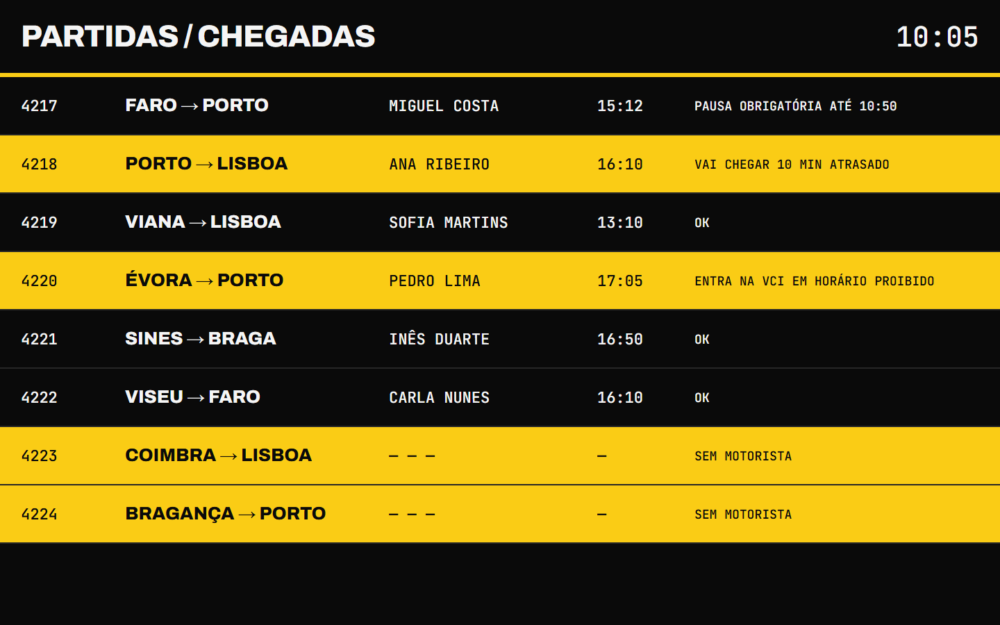
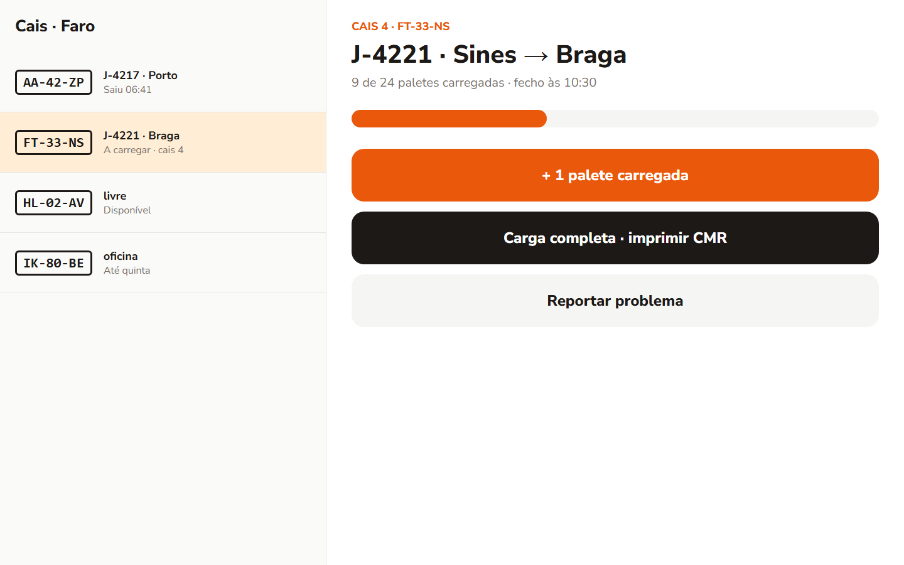
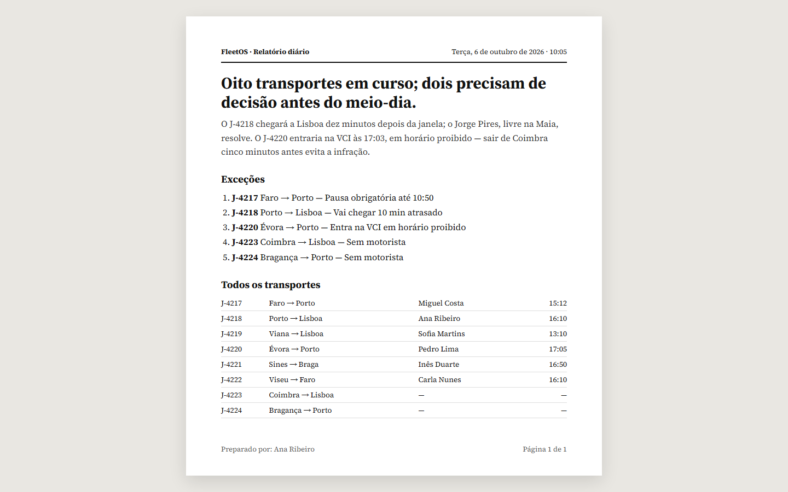
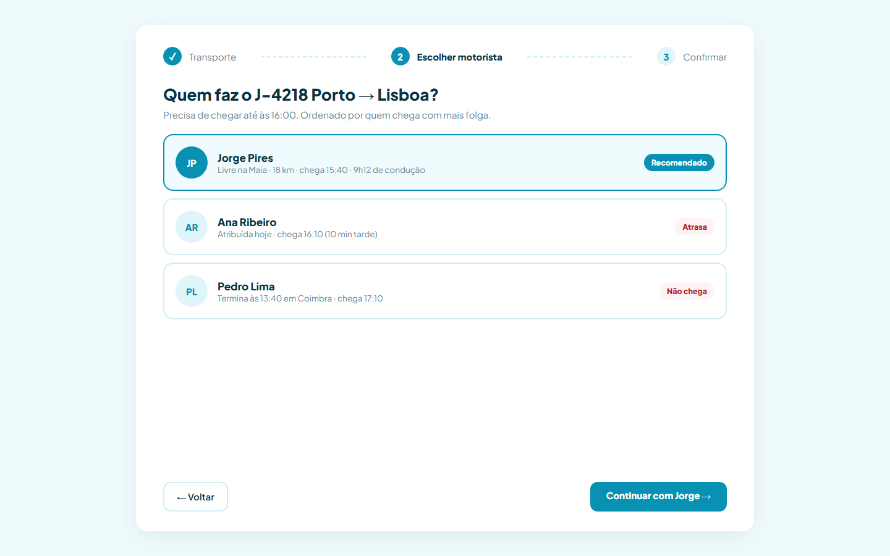